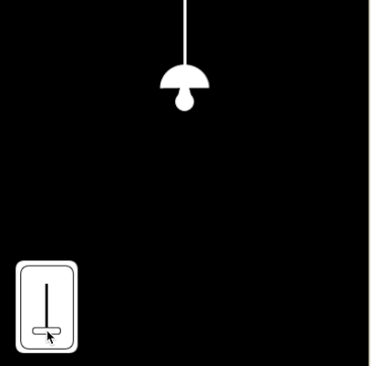

When designers and programmers are creating user interface elements, they are usually trying to design them in a way so that they can be related to the switches and buttons that we see in our everyday lives. This way we know exactly what they will do just by looking at them. Having seen sliders in our everyday life used to brighten up a room, we can easily guess what the slider will do before we see it dragged.

Just as a light dimmer allows a person to change the setting of a room, sliders in our games and visualizations can be used to change the world of the program. For instance, if we wanted to create a simulation to test what conditions are necessary to land a spacecraft on Mars, we can use sliders to allow people to experiment with different configurations just like NASA scientists did when they were trying to determine how to land the Curiosity rover on Mars.
Sliders are very often used to give people a way to set a particular parameter to a number in a given range. If you experiment by sliding the sliders in the Curiosity Landing simulator above, you can see the number attached to each configuration change with the movement. This allows us as programmers to guide new players in a game by giving them a range of "reasonable" values or introduce them to a new idea in a visualization by making sure the range of values would make sense in the real world. Another great way we can use sliders is to give people instant feedback for the changes they are making. In fact, you have probably been enjoying this powerful feature of sliders while you have been learning programming here on Khan Academy.
Think about how this instant feedback while tweaking the value of a variable with the slider has helped you fix a bug or discover something new about your program you did not see before. You can add sliders to your own programs to allow the people using them to experiment and play with a new idea! Some programming environments provide sliders natively, like HTML and its range input, but ProcessingJS does not. Of course, just as with buttons, we have everything we need in ProcessingJS to create our own sliders. This, in turns, gives us the power to customize our sliders in cool ways so they look more like real world objects like the light dimmer slider we started with. Let's go make some sliders!